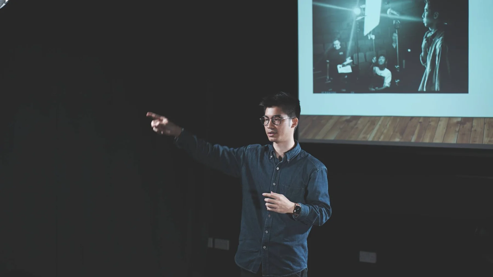
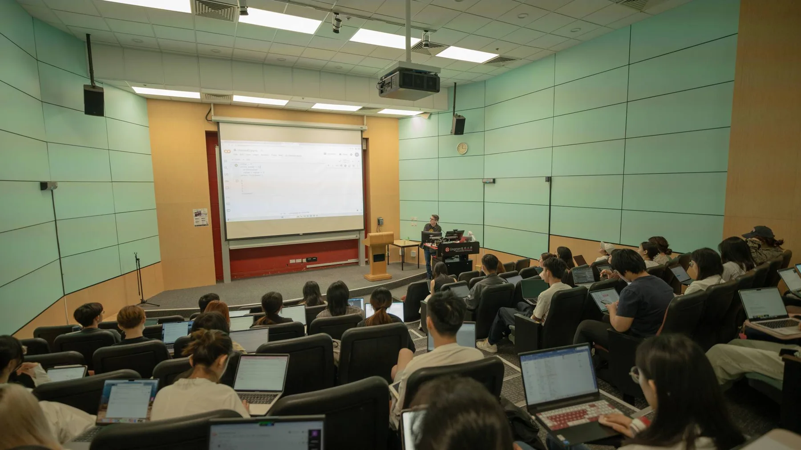
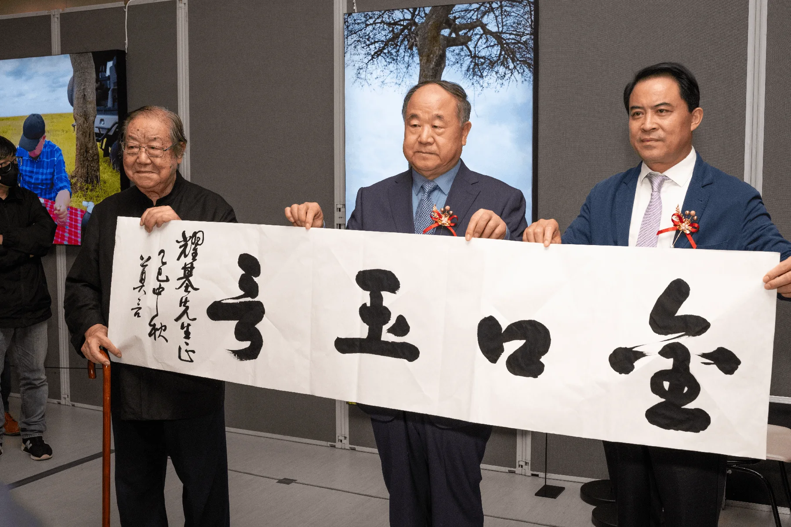
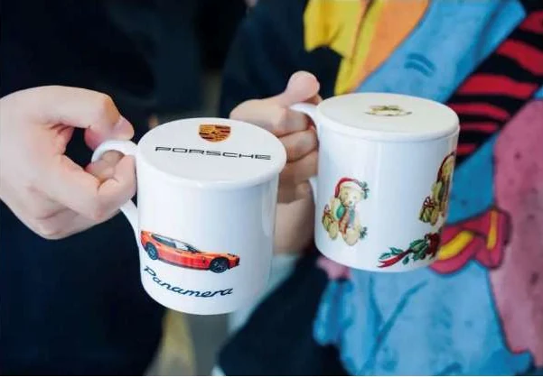

香港 DSE 課程補習
我們按學生的學習需要，提供 DSE 學科輔導。



我們參與的教學與文化活動自 2022 年起，我們持續為北京中加學校學生提供各科遙距輔導，配合課程進度和學生的學習需要，協助學生理解學科內容。

我們按學生的學習需要，提供 DSE 學科輔導。
我們協助學生理解大學課程內容，掌握學習方法。
我們與高校合作開展專題課程，
按團體需要結合課堂學習、實作與校園參訪。
認識人工智能、數據分析及其實際應用。
了解商業管理與金融，培養領導及決策能力。
透過機械人編程、科技實作及實驗室參訪，接觸科技研究。
探索個人興趣與學科方向，認識升學及職業選擇。
我們參與影視課程、詩歌影像製作，
以及文博項目的視覺與網站設計。
課程設計、授課安排與現場執行。
詩歌講解影片製作與頻道運營。
活動主視覺與網站製作。
文遊八方是我們的研學品牌，
主題涵蓋城市文化、科學探索與校園體驗。

文遊八方 · 研學活動我們以城市文化及傳統工藝為研學主題，結合現場觀察與陶瓷手作，讓學生認識工藝與日常生活的關係。
我們按需要訂製香港研學行程，提供多對一服務，結合八校遊覽與香港生活體驗。


香港科學教育協會
我們關注學生的學科學習、科學探究與文化理解，透過輔導及研學活動，讓課堂所學與實地經驗相互補充。
我們結合教學、文化內容製作與活動組織經驗，開展城市及校園研學。
文遊八方
香港嶺先文化傳播有限責任公司
FIRST CHOICE EDUCATION CONSULTANT INC.
我們希望學生學會自主學習，以證據作判斷，並理解不同觀點。